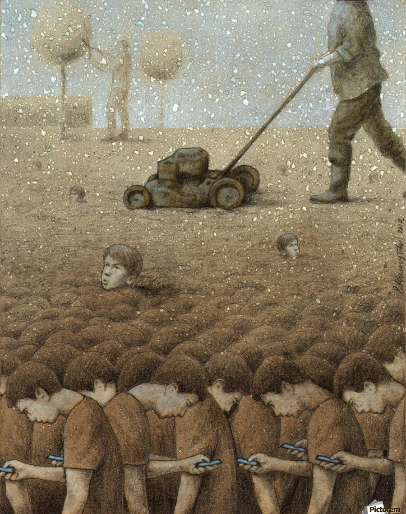

高大罂粟花综合征
- link
- 熊逸讲透资治通鉴1
比公孙鞅还早两个世纪的古罗马王政时代里，有一位国王人称「荣耀者塔克文」，是一个很干练的老狐狸。某一次王子赛克斯图斯征服了一座敌对的城市，派使者返回罗马，向父亲请示该怎么稳定局面。
塔克文正在花园休息，听完了使者的汇报，忽然举起一根棍子向着罂粟花丛横扫过去，扫落了几株最高的罂粟花的花冠，然后一言不发地走了。使者被搞得一头雾水，回去一五一十地向王子汇报。王子心领神会，明白父亲的意见是要自己杀掉城里那些有声望、有地位的人，这样一来，就不会有人还敢轻举妄动。
这件事出自古罗马史学家李维的《罗马史》，后来衍生出一个专有名词，叫「高大罂粟花综合征」（Tall Poppy Syndrome），这是既不会过时，也不受地域限制的古老智慧。
简单交代一下后话，那位聪慧又有决断力的王子殿下后来因为强暴了一名将军的妻子，著名的贤淑女子卢克丽霞，激发了政变，也激发了后来很多文人和画家的创作，罗马从此结束了王政时代，进入了共和国时代。
